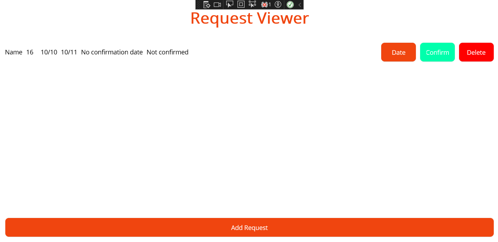

This week there were only a fue remaining tasks from week 8 as most members of our group had done most tasks. I had to chose a task that's alike to the first task I did for week 8, but with some twists. It is once again a page that lets you create elements, this time a "request" and delete them, but here the specifications are differents. A request is defined by it's name, dates of start and finish and required skill, similar to the Subteam from last week. But 2 parameters are new: You shall be able to modify the date at which the request is confirmed and should be able to confirm it. what will difference my work from week 8 and my work for this week are these 2 functions implemented in the software.
Here is the class model for the request. I have reused the Subteam's class and added the 2 parameters.
using SQLite;
namespace UNDAC_App.Models
{
public class Request
{
[PrimaryKey, AutoIncrement]
public int Id { get; set; }
public string Name { get; set; }
public string Size { get; set; }
public string RequiredSkill { get; set; }
public string Start { get; set; }
public string End { get; set; }
public string ConfirmDate { get; set; }
public string Confirmation { get; set; }
}
}
While creating a new request, Confirmation status and date of confirmation shall be set up accordingly, both not being set by the user:
public void AddRequest(string name, string size, string skill, string start, string end)
{
var newReq = new Request { Name = name, Size = size, RequiredSkill = skill, Start = start, End = end , Confirmation = "Not confirmed", ConfirmDate = "No confirmation date"};
connection.Insert(newReq);
}
Here are the 2 functions that let me modify the confirmation date and confirm that the request has been taken care of. It is stated as a required specification therefore it was were most of my work done for this week lies.
private async void ModifyReq(object sender, EventArgs e)
{
var button = sender as Button;
var selectedReq = button?.CommandParameter as Request;
if (selectedReq != null)
{
var newDate = await DisplayPromptAsync("Set a confirmation date?", "Enter date:", initialValue: selectedReq.ConfirmDate);
if (!string.IsNullOrWhiteSpace(newDate))
{
selectedReq.ConfirmDate = newDate;
RequestListView.ItemsSource = null;
RequestListView.ItemsSource = RequestList;
}
}
}
private async void Confirm(object sender, EventArgs e)
{
var button = sender as Button;
var selectedReq = button?.CommandParameter as Request;
if (selectedReq != null)
{
selectedReq.Confirmation = "Confirmed";
RequestListView.ItemsSource = null;
RequestListView.ItemsSource = RequestList;
}
}
The user interface is made of a button for creation and a list containing every element stocked, with 3 button for each of them.

Link to the code review done for my code
As it is now my code is in reviewing but looking back at it right before submission of the pdf I notice there could be some improvement on the use of manager codes. Some code that are in my page.cs file could be called from the manager to make readability easier.
Here my coworker's code is fine, without the repetition of clicking an item and modifying an item. But there is still some redundancy in their code. Also xaml could be improved, just like on my week's task, for better UX.
My issue with this week's work is that I haven't been able to make the UI clean enough. While I think maintaining it as simple as it has to be is key to a greate app, I am also certain that something simple but good looking will always be better.
I am also looking forward to some new tasks since these start to look like each other and there are too few of them for the whole team to work on.